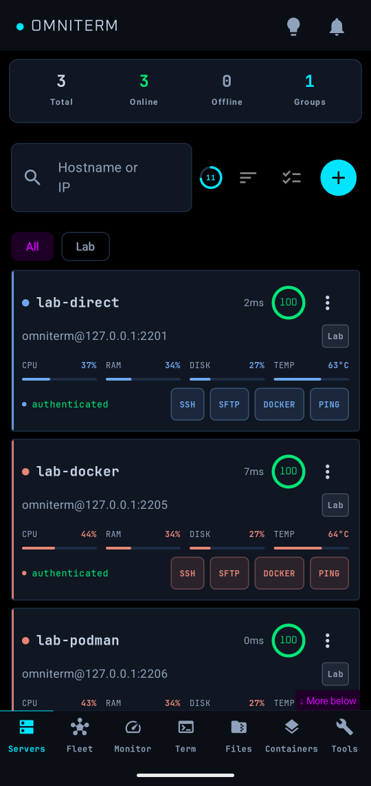

Hosts and sign-in

Adding a host
Under Servers → add enter a name, address, port, user and sign-in method. Optional settings include group, colour, notes, keepalive, compression, a jump host or proxy, a sudo password and SSH agent forwarding (off by default; enable it only for hosts you trust). Groups make Fleet targeting easier and each host has its own colour across the app.
Import from ssh_config
Copy your ~/.ssh/config to the phone and choose Import from an ssh_config file. OmniTerm lists each host with address, user, port and jump host (ProxyJump or ProxyCommand ssh -W) and keeps agent forwarding, compression and keepalive. Match blocks, Include and port forwards are not imported.
Keys, certificates and security keys
- SSH keys: under Tools → Auth & keys import or generate keys. OpenSSH and PEM private keys are accepted; a passphrase is stored encrypted on the phone. A key protected with chacha20-poly1305 has to be re-protected first, and the import says how.
- SSH certificates: add the key's
-cert.pub; the key list shows who it is for and when it expires. - FIDO2 security keys (USB or NFC): generate an Ed25519 or ECDSA key on the security key. The private key never leaves it, and each sign-in asks for a touch.
- Install a key on hosts: put a public key on one or many hosts, check that it works, and optionally switch those hosts to key sign-in. Windows hosts are not supported for this yet.
Two-step sign-in
When a host asks for a verification code or a new password, OmniTerm asks in a Sign in to ... dialog when you open a terminal, test a connection or browse files. After you sign in from a terminal, that host's monitoring and other checks reuse the sign-in. Those checks never ask on their own.
Host keys
The host key is pinned on first connect. If it changes, the connection is rejected until you review it. If you reject a key, background checks stop asking about that host.
Managing the list
Sort by name, status, health or latency. Each card offers Ping, Traceroute, Copy SSH command and System specs. Deleting a host also deletes its bookmarks, tunnels, alert rules, saved tmux sessions, Compose stacks and monitoring history; the confirmation lists what will go first.
The README is the full reference for every feature. Found a mistake? Open an issue.